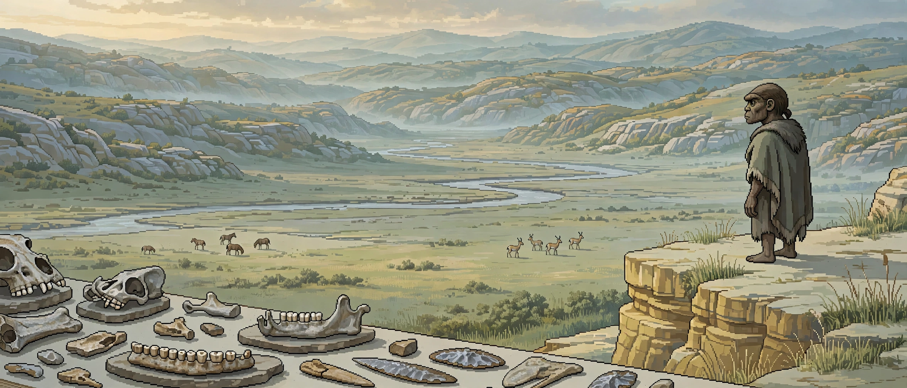

WEEK 06 · OCTOBER 26, 2026
The face arrived last

FIG. 1 · A FACE RECONSTRUCTED FROM FOSSILS AND PROTEINS · XUJIAYAO, NIHEWAN BASIN, NORTHERN CHINA
In 2010 a people entered science as a sequence. The evidence was a fragment of a little finger, found in Denisova Cave in Siberia. Its DNA matched neither modern humans nor Neanderthals. So a new kind of human was declared, named for the cave, with no skull, no face, and (still) no formal species name. First the genome. The body was a rumour attached to it.1
Sixteen years later the body is catching up. On October 21, 2026, a team led by Qiaomei Fu at the Institute of Vertebrate Paleontology and Paleoanthropology in Beijing reported in Nature that fossils from Xujiayao, in the Nihewan Basin of northern China, are Denisovan. Not by shape alone. By protein.12
The fossils had been waiting in drawers. Excavated between 1976 and 1979 alongside horses, rhinos and gazelles, the Xujiayao assemblage holds the remains of about twenty individuals and roughly 30,000 stone, bone and antler artefacts. The bones are dated to between 199,000 and 138,000 years ago. For decades they were filed under one label, then another. In 2024 they were made the type material of a proposed new species, Homo juluensis. Labels are cheap when nothing can read the bone itself.34
Proteins can, for longer than DNA can. DNA gives more detail about an individual, but it degrades. Collagen lasts. (Palaeogeneticist Sally Wasef, quoted in Nature, puts the trade plainly: protein analysis complements DNA precisely because proteins survive longer without fully degrading.) Fu's team sampled two bones, a parietal fragment and a piece of jaw, recovered 18 ancient proteins from them, and ran the work in two independent laboratories. The identification rests, in the end, on one position in one collagen chain.124
FIG. 2 · ONE POSITION IN A COLLAGEN CHAIN: COL1A2, SITE 996
Xujiayao parietal bone. In the detailed peptide count, 57 distinct peptides carry lysine at this position and one carries arginine. Lysine is the Denisovan state.
Schematic, not a sequence map. Counts and the K/R contrast are from the paper and its detailed analysis; see sources 2 and 4.
Once two bones are anchored, the rest of the drawer can be read as anatomy. And the anatomy is consistent: a low, sloping forehead. A massive brow ridge that curves backwards, with a groove above it. Rectangle-like eye sockets. Flat cheeks. A moderately raised, flat bridge to the nose. Thick skull bones, a low and relatively flat vault, and a jaw that does not protrude far. Wasef's summary is the shortest version: we are finally starting to put a face to the Denisovan.123
The face also deletes a name. If Xujiayao is Denisovan, Homo juluensis (proposed in 2024, built partly on the size of these skulls) loses its type population. The authors argue the size gap that motivated it sits inside the variation of one widespread population. One letter in a collagen chain outranks a species erected on measurements. That is not an insult to measurement. It is a ranking of evidence.34
- Molecular first. Every other archaic human was named from bones and argued over in bone language. The Denisovans were named from molecules and spent sixteen years as a genome in search of a skeleton. The order of discovery was reversed, and the science had to run backwards: identity first, appearance later.
- Patient. The decisive fossils were dug up in the 1970s, misfiled under successive labels, and promoted to a new species in 2024, all before a method existed that could read them at the level that settled the question. The drawer was not a failure of storage. It was storage waiting for a reader.
- Unfinished. Two bones carry the molecular result. The paper then extends the Denisovan label, on anatomy alone, to Dali, Jinniushan and Hualongdong. A close reading notes the trait suite never appears in full in any single one of those fossils. That extension is an argument, not a measurement. It should be held as one.
Consider how thin the thread is, and how much it holds. One amino acid, lysine instead of arginine, at position 996 of a collagen chain, repeated across enough peptide fragments, in two bones, in two laboratories, with contamination controls that come back clean. From that: a population, a range across East Asia, a face, and the retirement of a species name proposed two years ago.
Thin threads are not weak threads. A thread is weak when it is the only kind you have. Here the thread ties things that were already lying in the same drawer (skulls, jaws, teeth, 30,000 artefacts) to a name that was already floating without a body. Knot one end to the genome from a Siberian cave. Knot the other to a skull from northern China. The line between them is a people.
SOURCES
- Nature, news, October 21, 2026: the face (forehead, brow ridge, eye sockets, cheeks, nose), the 2010 finger bone origin, proteins surviving longer than DNA, and the Wasef and Demeter assessments.
- Phys.org, October 23, 2026, on the Nature paper (DOI 10.1038/s41586-026-11132-z): 18 proteins, the COL1A2-996K collagen variant, the 1976 to 1979 excavation of the two sampled fragments, and the low flat skull with thick bones.
- IFLScience, on the 138,000 to 199,000 year dating, the roughly 30,000 artefacts, the 2024 Homo juluensis assignment, and the Dali, Jinniushan and Hualongdong comparison.
- Anthropology.net, October 22, 2026: the close reading. Peptide counts at position 996 for both bones, the two laboratory runs, the deamidation controls, and the case that the wider reclassification rests on anatomy alone.